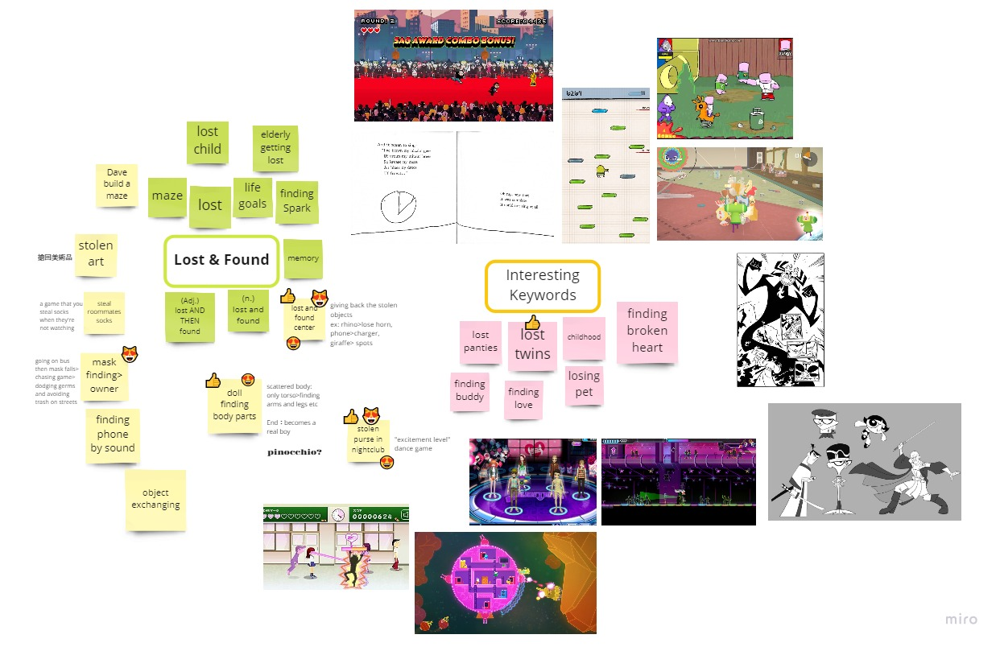
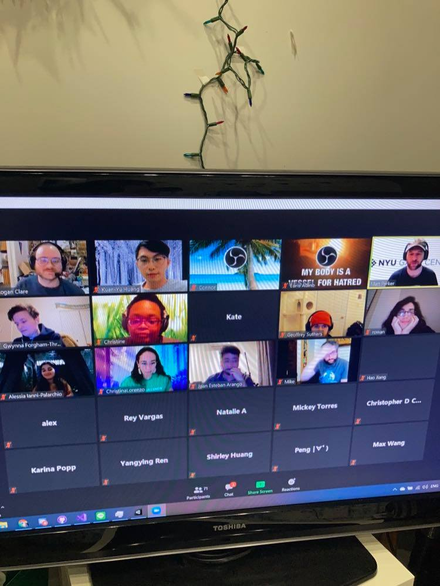

The theme is "lost and found" this year. The game is inspired by my true story in NYC night club that I chased a thief and got back my wallet.
Based on the theme Lost and Found, we brought up some related ideas and experiences. We decided to stick on my story of chasing a thief in a club. In terms of game's format, several epic games inspired us to create a 2D running game such as Red Carpet Rampage, Lovers in a Dangerous Spacetime, Doodle Jump ...etc.
Our game is consisted of 3 scenes, which is telling a story that a girl met her love in a club when chasing down the thief and happily got a baby after that.
Me and my beautiful teammates ⭐⭐
The final presentation